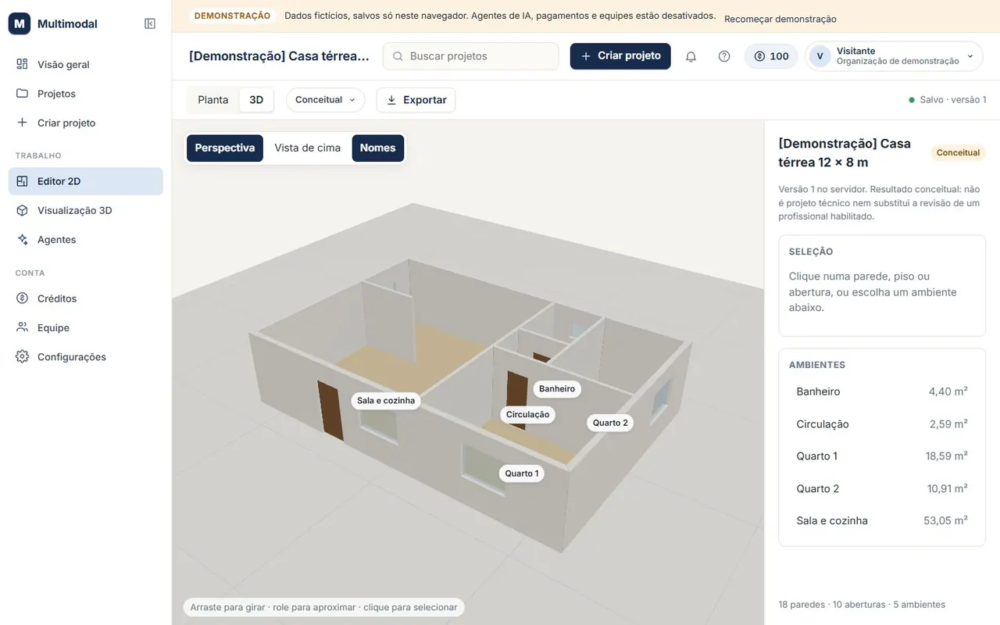
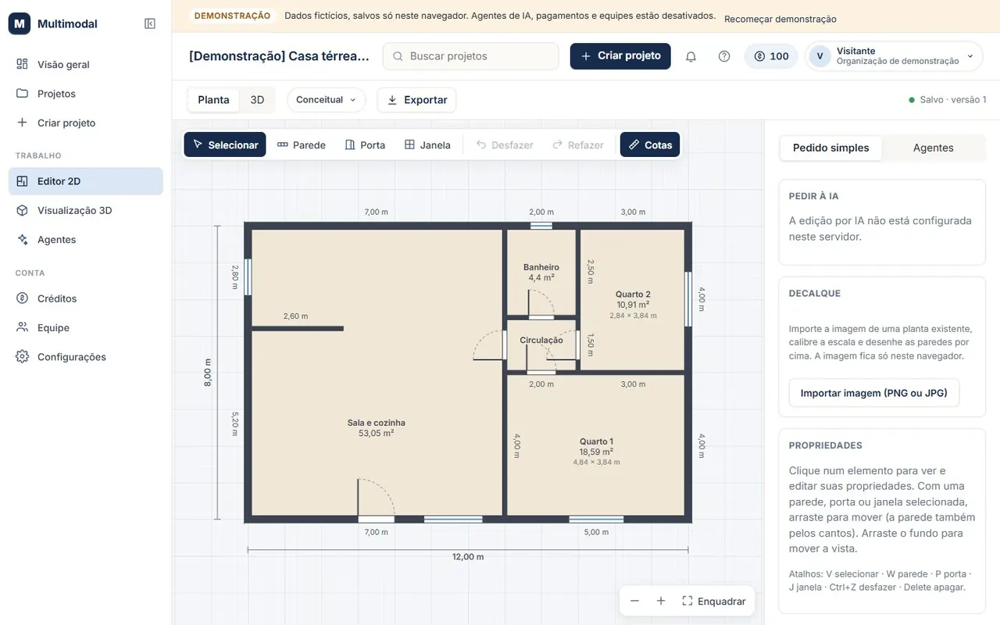
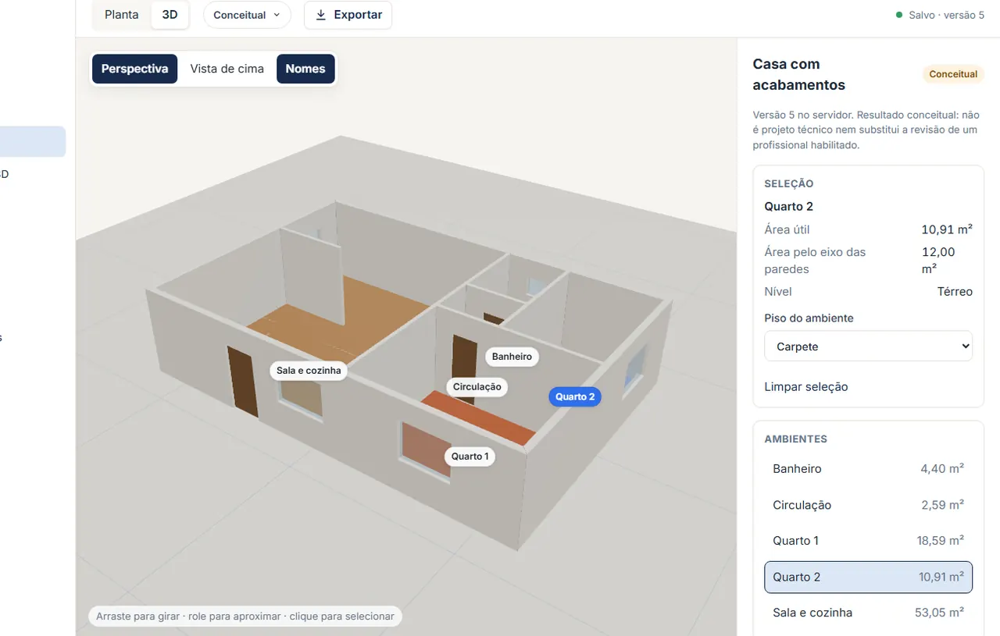
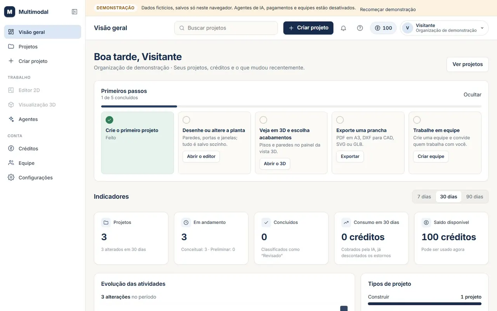

Em desenvolvimento. A demonstração já está aberta.
Multimodal Architecture
A plataforma de arquitetura da Blue Rose. Você desenha a planta em 2D, vê o mesmo projeto em 3D e exporta para o programa que já usa.
A demonstração usa dados fictícios e não pede conta nem senha. O que você fizer fica só no seu navegador.

Quatro formas de começar um projeto
- Construir
- Uma construção do zero: paredes, ambientes, portas e janelas.
- Reformar
- Muda um projeto que já existe e preserva o que não muda. Dá para partir da foto de uma planta, calibrada em metros, e desenhar por cima.
- Projetar interiores
- Ambientes e composições, com o agente Designer de Interiores (desativado na demonstração).
- Visualizar
- Ver plantas e ideias em 3D, de qualquer ângulo.
A demonstração por dentro
Telas reais da demonstração, com o projeto de exemplo. Escolha a tela:



- Funciona de verdade
Editor 2D, vista 3D com acabamentos, decalque a partir da foto de uma planta e a exportação em PDF, DXF, SVG e GLB (conferida em 08/11/2026).
- É ilustrativo
Os projetos, nomes e medidas de exemplo, os 100 créditos e os indicadores do painel. Nada disso é de cliente.
- Está desativado
Agentes de IA (inclusive o pedido à IA no editor), pagamentos e equipes. Dependem do servidor real, que ainda não está aberto.
A planta recusa o que não pode existir
Parede curta demais, abertura fora da parede ou sobreposição: o editor não aceita e diz o motivo. Tudo se apoia na mesma geometria, então a medida da planta é a medida do 3D e da prancha.
- Paredes, portas e janelas com encaixe nos cantos
- Cotas e área útil de cada ambiente
- Desfazer e refazer, com salvamento automático
O mesmo projeto em 3D
Gire, aproxime e clique num cômodo. Escolha o acabamento de cada parede e de cada piso: são sete de parede e seis de piso.
Sai pronto para o programa que você já usa
| PDF A3 | Prancha em escala, com barra de escala, quadro de áreas e carimbo |
|---|---|
| DXF | Para AutoCAD, Revit e SketchUp, em milímetros e com camadas |
| SVG | Imagem vetorial para documentos e impressão |
| GLB | Modelo 3D para o Blender e outros visualizadores |
Agentes de IA que só propõem
Cada especialista mostra o que faz e quanto custa antes de começar. Toda proposta passa pelo motor geométrico, e nada entra no projeto sem a sua aprovação. Na demonstração os agentes aparecem desativados, porque dependem do servidor.
Ainda não está à venda
A plataforma está em desenvolvimento e o teste com pessoas de fora ainda não abriu. Os resultados são conceituais: servem para estudar e comunicar ideias e não substituem o projeto de um profissional habilitado.